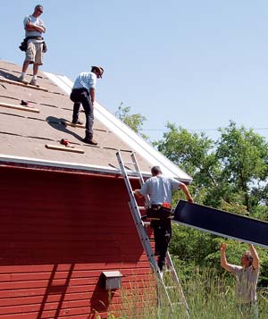

Installing clean, reliable, inflation-proof solar power is easier than ever, thanks to the invention of thin-film photovoltaic (PV) laminates that can be bonded directly onto metal roofing panels. Unlike crystalline PV material, there's no need for obtrusive racks and heavy, expensive glass. Instead, unbreakable thin-film PV is produced using amorphous silicon, encapsulated in Teflon and other polymers.
Thanks to pioneering work by Steve Heckeroth, a Mother Earth News contributing editor and the director of building-integrated photovoltaics for Energy Conversion Devices (ECD) Ovonics, this thin-film PV is now available in easily shippable, 16-inch-wide rolls. It's a peel-and-stick laminate. You just unroll the sheet, lay it faceup on a flat metal roofing panel and press it onto the panel while your assistant pulls the protective sheet off the sticky backing.
Invented by ECD Ovonics co-founder Stan Ovshinsky, thin-film laminates offer several advantages over crystalline PV panels. (See Meet Stan Ovshinsky, the Energy Genius for a profile of Ovshinsky and his remarkable renewable energy inventions.) Thin-film sheets perform better in high temperatures and in partly shaded conditions, and they require 100 times less silicon, which means thin-film PV is expected to become less expensive than crystalline as production capacity expands over the next few years.
We had a chance to get a firsthand look at this exciting new PV option after Heckeroth offered to install it on the new metal roof I was putting on my small barn last summer. We invited the public, and Heckeroth led a workshop about solar power. Nearly 50 folks spent an unusually hot, 100 degree May day watching and helping as Heckeroth showed volunteers how to bond the thin-film PV laminates to the metal roof panels. Then local architect and builder Kenton Knowles and his Global Homes crew installed the panels on the barn. As the sequence of photos shows, it's hard to imagine a simpler way to install grid-tied, solar-electric power on a new or replacement metal roof. It took only five to 10 minutes to apply each PV sheet to a roof panel.
Our new metal roof was 24-gauge Galvalume steel from Englert, Inc. It should last at least 50 years, and the steel can be recycled, making it an excellent sustainable choice for any building. After the roofing panels were installed, Heckeroth danced briefly along the ridge to snap the connecting wires together, and then our electrician, Robert Gore, wired the direct-current output from the thin-film PV into a Fronius inverter. The inverter converts the direct-current power generated by the solar panels to standard 110-volt alternating current. Then the power flows through the new meters installed by the utility company (at no charge!) and into my home.
The sun was blazing, and the roofers were really sweaty, but as soon as Gore flipped the switch, everyone smiled as the inverter kicked on and the digital readout quickly climbed to "1,530 watts," showing exactly how much electricity the new system was delivering to the house. Anytime the house needs more power than the PV is producing, the system draws from the utility grid.
The only hard thing about grid-tied solar power is paying for it, but it makes more economic sense every time the rising cost of oil pushes up energy prices. Now, ECD Ovonics' thin-film PV costs about the same as crystalline PV with glass covers and frames, $4 to $5 per watt, but it requires less labor to install.
In addition to the PV, you'll need an inverter (ours cost about $2,500), cables and switches, plus the services of an electrician and roofers. Then you subtract all tax credits, rebates and other incentives available in your state. The final cost will vary greatly depending upon where you live.
Two major variables will determine the long-term value of your PV system: 1) Your utility's electric rates and how much they increase over the 25-year life of your system and 2) State and federal incentive programs to promote renewable energy. Here in Kansas, a small system such as our grid-tied 1.8 kW setup would cost about $7,200 for the PV, plus $2,500 for the inverter and switches, plus labor. We can reduce this amount by claiming a federal income tax credit of about $2,000. Kansas unfortunately has no state incentives to encourage solar power development, nor has it passed a net-metering law that would require our utility company to pay us a retail rate for any electricity our system sends back to its grid. Kansas is lagging behind the rest of the country - 40 states have now passed net-metering laws and most have enacted incentives to support further development of solar, wind and other renewable energy options.
In nearby Colorado, for example, some utilities are paying rebates of up to $6 per watt to homeowners who install PV systems, thanks to a state law requiring utilities to generate 10 percent of their power from renewable sources by 2015. So in Colorado and dozens of other states that offer generous rebates and credits, solar power has become a very attractive option.
It's hard to predict exactly how fast a PV system will pay for itself, since nobody really knows how high the cost of grid electricity will climb as oil and gas prices rise (along with growing concerns about global warming) and how much the prices for PV will shift as demand and production capacity increase. But in the dozens of states that have decided it's wise to offer generous renewable energy incentives, investing in solar power already makes great sense. To find out what incentives are available in your state, visit the Database of State Incentives for Renewables & Efficiency. For more about how to calculate the payback period, see You Can Afford Solar Power.
A straight cost/benefit analysis is not the only factor to consider. If you choose to go solar, you will be supporting an industry that is poised to make a major contribution to the looming energy crisis and our global warming predicament. Buying a solar-electric system is one of the best things you can do to help protect our environment and to give your family some protection from skyrocketing energy prices and the uncertainties caused by climate change. Every homeowner who opts for clean, renewable solar power is taking us one more step toward a wiser, more sustainable human presence on Earth.
Check out the Related Content box to watch a video of solar expert Steve Heckeroth explaining how building-integrated thin-film solar power works. Heckeroth is a Mother Earth News contributing editor and the former director of building-integrated photovoltaics for ECD Ovonics.
www.dcpower-systems.com
This leading wholesale distributor will answer questions about Uni Solar thin film PV and assist you in locating the nearest dealer.
www.dsireusa.org
Spells out the state rebates, loans and other incentives available for all renewable energy categories and for energy conservation.
www.homepower.com
Home Power magazine is an excellent resource for anyone who wants to learn more about solar or other renewable energy options. The Web site includes a directory of renewable energy dealers and installers.
www.nabcep.org
Find certified solar installers listed with the North American Board of Certified Energy Practitioners.
www.pvwatts.org
Determines how much power a PV system will produce at your location and lists local utility electric rates.
www.uni-solar.com
Through this site you can locate a solar installer who can give you a price quote on a building-integrated ECD Ovonics solar project.
Got Sun? Go Solar
by Rex A. Ewing and Doug Pratt
This new book by two veteran solar experts provides a clear discussion of all the basic information homeowners need in order to choose a simple, grid-tied solar or wind system.
|
MATTHEW T. STALLBAUMER Renewable energy expert Steve Heckeroth developed this building’s integrated thin-film solar roof system. |
MATTHEW T. STALLBAUMER Step 1: Peel off the backing of the PV strip and stick it onto the roof panel. |
 MATTHEW T. STALLBAUMER Step 2: Raise the solar roof. |
|
MATTHEW T. STALLBAUMER Step 3: Snap one edge of the roof panel into place, with help from the rubber mallet. |
MATTHEW T. STALLBAUMER Step 4: Screw down the other edge to secure it. |
CHERYL LONG Ta dah! All done, with the electrical connections neatly tucked under the ridge cap. |
|
MATTHEW T. STALLBAUMER Steve Heckeroth explains how the thin-film PV on this barn roof in Topeka, Kan., converts sunlight into electricity. |
|
|